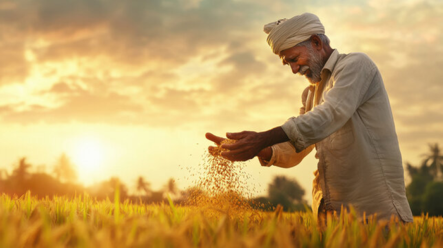
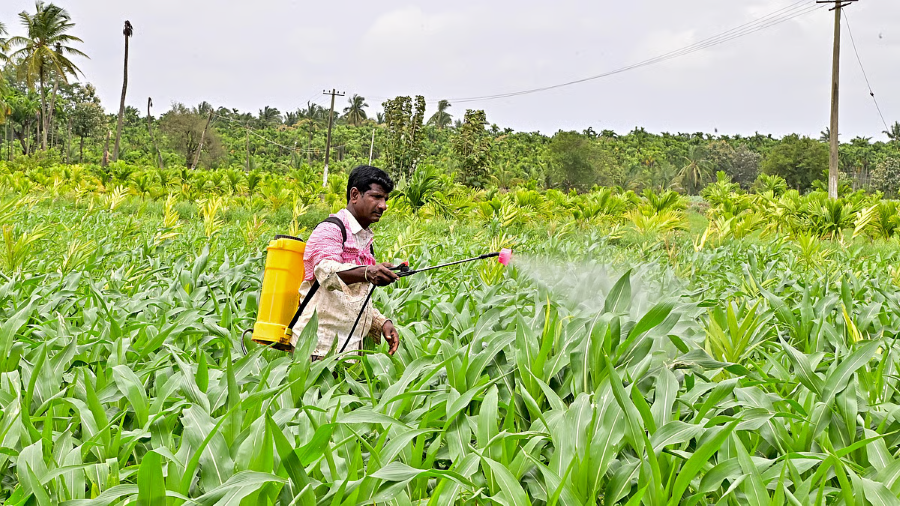

Karnataka Farmer Assistance Site (E-Agri)
Karnataka Farmer Assistance Site (E-Agri)
 Karnataka Farmer Assistance Site (E-Agri)
Karnataka Farmer Assistance Site (E-Agri)




FarmNex is a web-based application developed to provide digital support and guidance to farmers in a simple and efficient manner. In today’s rapidly advancing world, technology plays a crucial role in improving agricultural practices, and FarmNex aims to connect farmers with essential information through an easy-to-use digital platform. The main objective of this project is to help farmers make informed decisions by providing access to important resources such as weather updates, crop information, market prices, and government schemes.The application is built using modern web technologies including HTML, CSS, and JavaScript, which ensure a well-structured design, visually appealing interface, and interactive user experience. FarmNex features a centralized dashboard that allows users to quickly access various services in an organized way. The design focuses on simplicity and usability so that even farmers with basic digital knowledge can navigate the platform without difficulty.FarmNex not only provides valuable information but also helps improve agricultural productivity and reduce risks by keeping users updated with timely data. It acts as a bridge between traditional farming practices and modern technological solutions. Additionally, the platform has the potential for future enhancements such as integration of real-time APIs, multilingual support, and mobile-friendly features to reach a wider audience.In conclusion, FarmNex is an innovative step towards digital agriculture, aiming to empower farmers with knowledge, increase efficiency, and support sustainable farming through a reliable and user-friendly web application.
Admin
Address: Kampli Sugar Factory
Ballari, Karnataka 583132
Phone: 8088858543